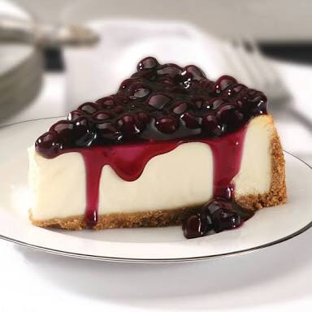
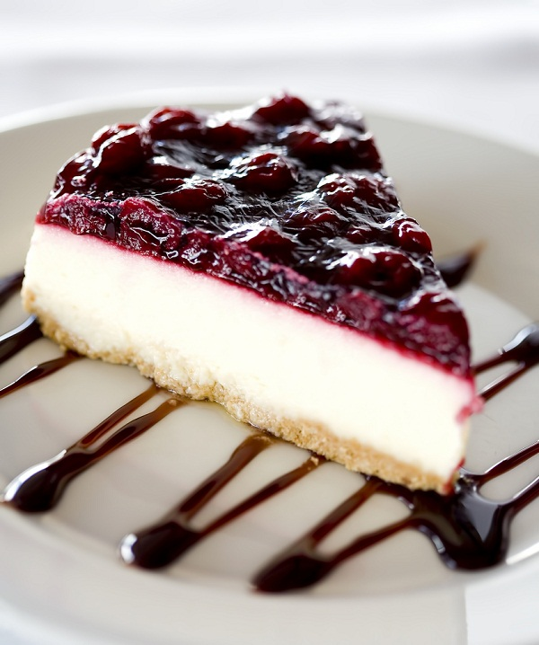

แบบฝึกหัด 2: Basic HTML
6440011022 น.ส.พรนัชชา แซ่ด่าน
Blueberry Cheese Pie


วันนี้เราขอเอาใจแม่บ้านสายหวานด้วยการพาไปทำขนมง่ายๆ กันบ้างค่ะบอกเลยว่าดีต่อใจคนรักขนมแน่นอน เพราะนี่คือ สูตรขนมบลูเบอรี่ชีสพายรับรองว่าเป็นเมนูที่ไม่ซับซ้อน สนุกไปกับการทำได้ง่ายๆ เด็กทำได้ ผู้ใหญ่ทำดี แถมยังทำขายได้กำไรปังๆ อีกด้วยค่ะ บอกเลยว่าอร่อยกันจนลืมกลัวอ้วนกันไปเลยทีเดียว
ส่วนผสม
แครกเกอร์ 2 แถว
เนยสดชนืดจืด 1/2 ก้อน
ครีมชีส 1 ก้อน
โยเกิร์ตรสธรรมชาติ 2 ถ้วย
นมข้นหวาน 2-3 ช้อนแกง
น้ำมะนาว 1/2 ช้อนแกง
บลูเบอรี่ 1 กระป๋อง
ถ้วยฟอยด์เบอร์ 3202-P
วิธีทำ
บดแครกเกอร์ให้ละเอียด
นำเนยไปละลาย เข้าไมโครเวฟ ครั้งละประมาณ 30 วินาที จนกว่าเนยจะละลายดี
ใส่เนยลงไปในแครกเกอร์ที่บดแล้ว คลุกเคล้าให้เข้ากัน ให้มีลักษณะเหมือนทรายเปียก แล้วกดพายใส่ลงเป็นฐานในพิมพ์ แล้วพักไว้
ใส่ครีมชีสลงไปในชามผสม ตามด้วยโยเกิร์ต นมข้นหวาน และน้ำมะนาว ตีให้ส่วนผสมเข้ากันจนเนียน ชิมรสแล้วปรุงตามชอบ
ตักครีมชีสใส่ลงในพิมพ์ เกลี่ยให้เนียน แล้ววางบลูเบอรี่ทับหน้าลงไป
สามารถทานได้เลย หรือแช่ตู้เย็นช่องธรรมดาไว้ได้หนึ่งคืน จะอร่อยพอดี
ข้อมูลโภชนาการ
| พลังงานทั้งหมด 290 g |
พลังงานจากไขมัน 162 |
|
%ร้อยละของปริมาณที่แนะนำต่อวัน* |
| ไขมันทั้งหมด 18 g |
28% |
| ไขมันอิ่มตัว 0 g |
0% |
| ไขมันไม่อิ่มตัวเชิงซ้อน 0 g |
|
| ไขมันไม่อิ่มตัวเชิงเดี่ยว 0 g |
|
| ไขมันทราน 0 g |
|
| คลอเรสเตอรอล 38 mg |
13% |
| โซเดียม 0 mg |
0% |
| โพเทสเซียม 0 mg |
0% |
| คาร์โบไฮเดรตทั้งหมด 26 mg |
9% |
| ใยอาหาร 0 g |
0% |
| น้ำตาล 0 g |
|
| โปรตีน 6 g |
12% |